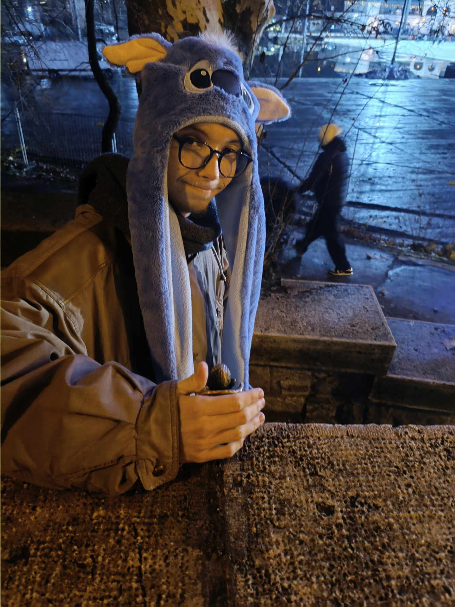
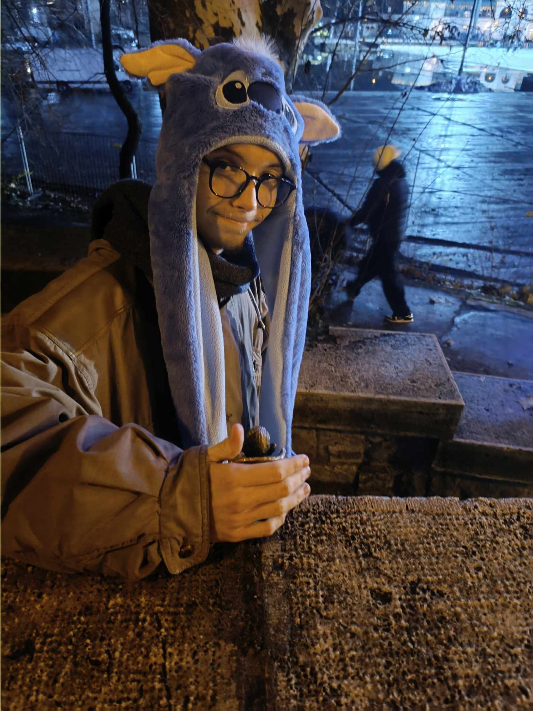
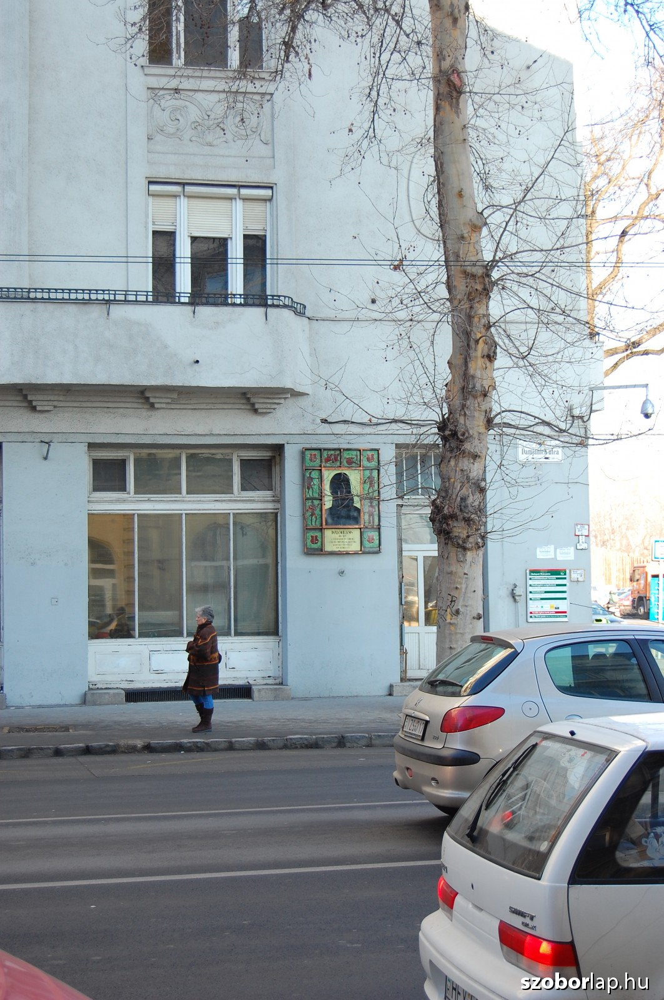
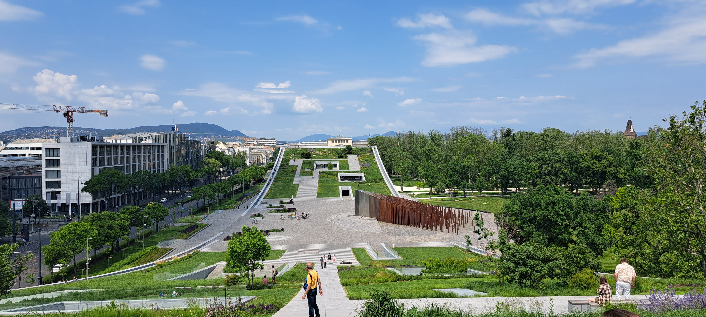
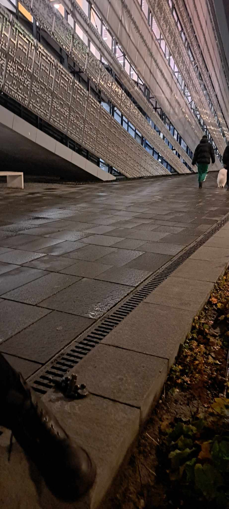

Magyar Zene Háza
A Magyar Zene Háza a budapesti Városligetben, a Városligeti-tó tőszomszédságában, a Vajdahunyad vára közelében épült a régi, elbontott Hungexpo irodák helyén. A Liget Budapest Projekt részeként létrejött intézmény állandó kiállításaiban az egyetemes és a magyar zenetörténet is fontos szerepet kap. Az épületet Fudzsimoto Szószuke [1] japán sztárépítész tervezte, aki természetközeli, áttetsző üvegépítményt szánt a liget fái közé.


Vajdahunyad Vár
A „kétszer felépült”[2] Vajdahunyad vára vagy Vajdahunyad-vár, hivatalos nevén Történelmi Épületcsoport Alpár Ignác építész alkotása Budapest XIV. kerületében, a Városligetben. A Városligeti-tó Széchenyi-szigetén található, mely négy hídon keresztül érhető el. A vár milleniumi történelmi kiállítási épületként 1896-ban, majd 1899-es elbontása után másodszor a Magyar Mezőgazdasági Múzeum céljára épült fel 1902 és 1908 között, így a múzeum céljait szolgálja, ez alól kivétel az 1915. augusztus 8-án felszentelt, s a római katolikus egyház kezelésébe adott Jáki kápolna. Mai, közkeletű nevét Hunyadi János kormányzó és Szilágyi Erzsébet lakóhelyének a legjellemzőbb részéről, a vajdahunyadi várat mintázó, Hősök tere felőli főhomlokzatáról kapta.


Városligeti-tó
A Városligeti-tó Budapesten, a Városligetben található mesterséges tó. Tavasztól télig csónakázásra használják, télen a tó medrének egy részén üzemel a Városligeti Műjégpálya. Felette áll az 1986-ben épült Zielinski híd, alatta pedig 1973 óta a Kisföldalatti fut.
 

Damjanich János emlékmű
Szolnokot 1849. március 5-én Damjanich János honvédtábornok csapatai visszafoglalták, ezzel kezdetét vette a tavaszi hadjárat. Az 1848–49-es forradalom és szabadságharc kiemelkedő személyiségét örökítette meg Radnai Béla szobrászművész. A dicsőséges tavaszi hadjárat emlékére készült alkotást 1912-ben állították fel. Az emlékmű carrarai fehérmárványból készült.
Néprajzi Múzeum
A Néprajzi Múzeum országos múzeum, amely a Városliget kapujában, a Dózsa György út mentén épült fel a Liget Budapest Projekt keretében, kifejezetten a múzeum számára. A Néprajzi Múzeum új épületének átadására az intézmény alapításának 150. évfordulója évében, 2022-ben került sor.
 Magyar Színház
A Pesti Magyar Színház (röviden: Magyar Színház, 1840–2000 között Nemzeti Színház) állami fenntartású közintézmény, ami 1966 óta a Hevesi Sándor tér 4. szám alatt működik. 1837. augusztus 22-én nyílt meg a mai Astoriánál, a Múzeum körút és a Rákóczi út sarkán, majd amikor az intézmény Pest vármegyétől az állam tulajdonába[6] került, a társulat neve Nemzeti Színházra változott. 1840. augusztus 8-án már így nyitotta meg kapuit és mutatta be Erkel Ferenc első operáját.Negyven évvel később az opera ágazat külön épületbe, az Operaházba költözött. Működését hosszú időn keresztül számos vihar kísérte.